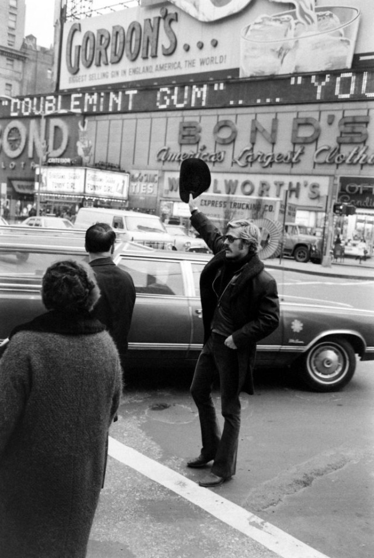

10/04/21 18:29:37 ¶ ● ⬀ ⬈ citizenscreen:Robert Redford hails a cab in Times Square. Just a few blocks away, at the Biltmore Theater on 47th Street, was where the actor got his first major notices as the star of Neil Simon’s 1963 Broadway play, “Barefoot in the Park.”